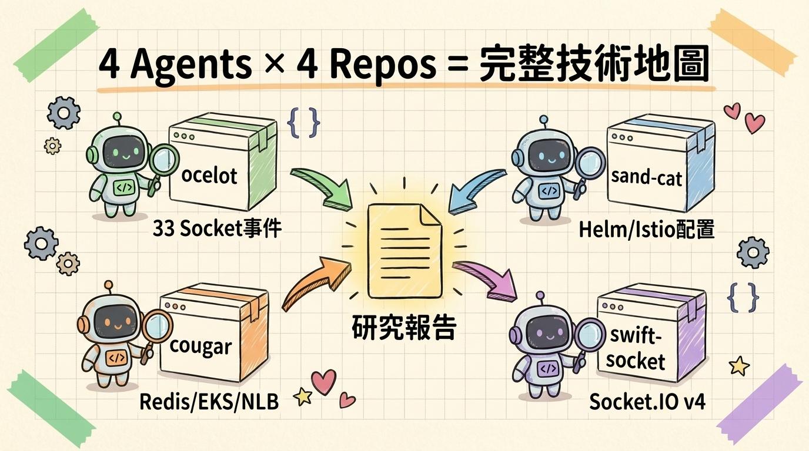
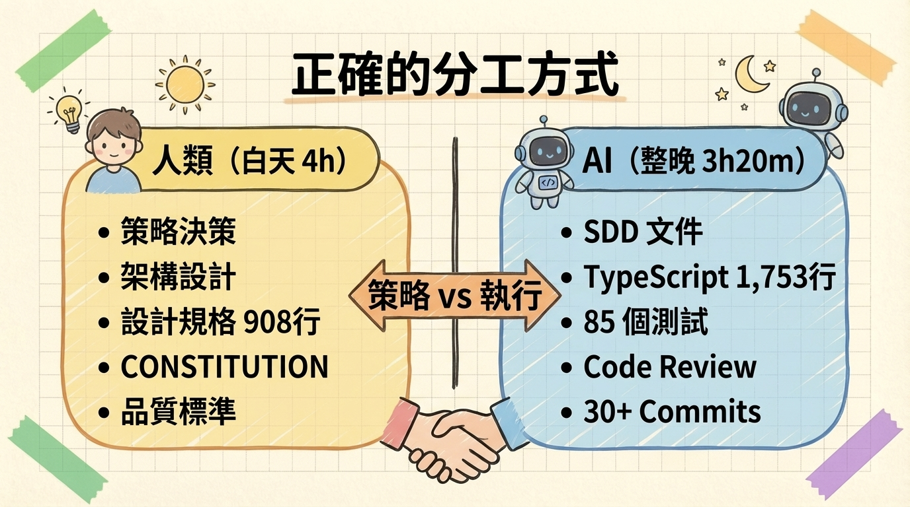
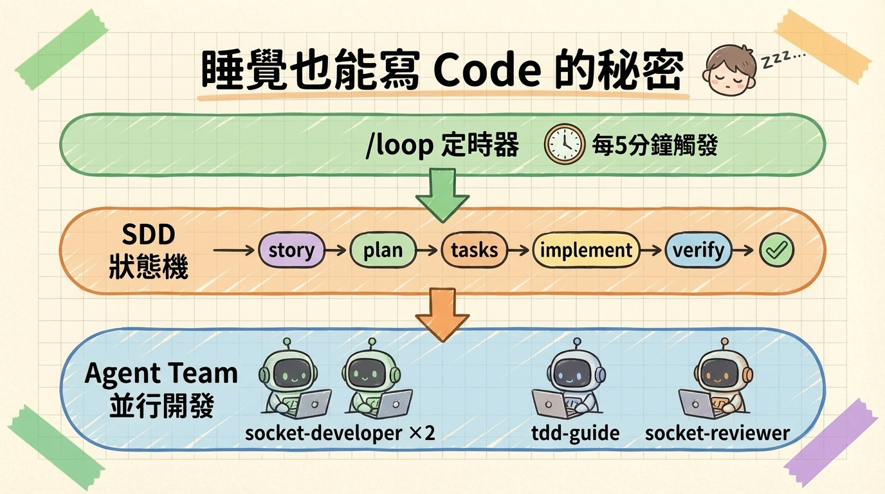
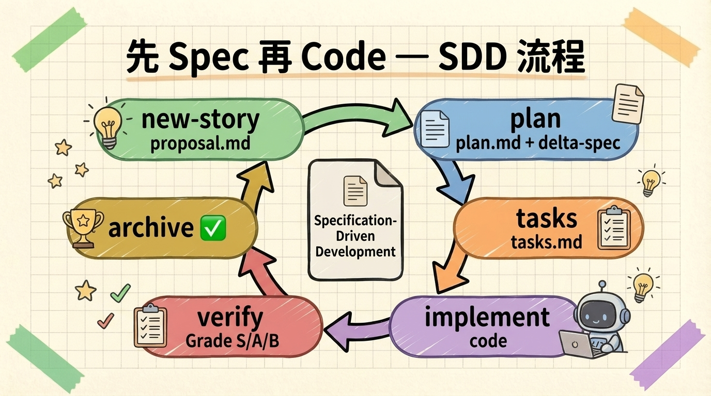
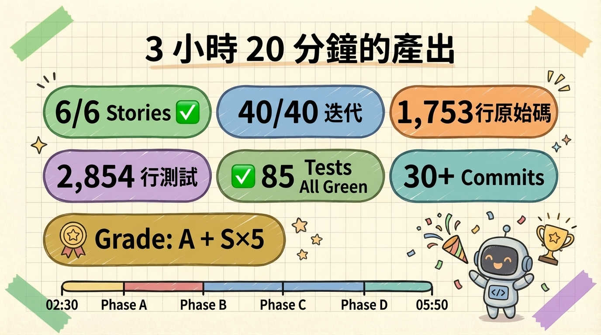
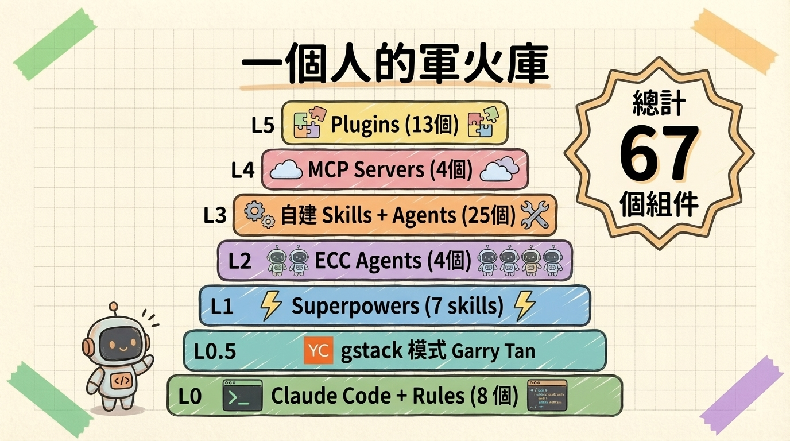

swift-socket 遷移全流程 — Python Socket.IO to Node.js
一行指令，睡一覺，
起來收穫完整伺服器
為什麼要做 — Python Socket.IO 的結構性問題
Agent Teams 跨專案研究
三輪驗證與架構決策
人類做決策 — 5 個關鍵選擇
設計徹夜開發計劃
一夜自動開發 — 執行全記錄
最終成果 + 工具鏈全景
關鍵學習與結語
| # | 問題 | 根因 | 為何 Python 無法解決 | |
|---|---|---|---|---|
| 1 | 單 worker 瓶頸 | Python socket.io 無 Cluster Adapter | Node.js 有 Redis Streams Adapter 支援多 pod | P0 |
| 2 | Redis 斷線丟包 | Python 只有 Pub/Sub Manager | Node.js 有 Redis Streams Adapter (at-least-once) | P0 |
| 3 | 斷線重連體驗差 | Python 無 Connection State Recovery | Node.js v4.6+ 原生支援 | P0 |
| 4 | 維護風險 | Python socket.io 為個人維護 | Node.js Socket.IO 為官方團隊維護 | P0 |
修法：加入 stickyId consistent hash
為什麼是治標：仍受限於 Istio L7 routing 限制
修法：--workers 1 單 worker 模式
為什麼是治標：無法水平擴展
結論：需要遷移到 Node.js Socket.IO — 這不是 patch 能解決的問題
| Repository | 角色 | 研究重點 |
|---|---|---|
| ocelot | Python FastAPI | 33 個事件映射、Redis Streams |
| sand-cat | ArgoCD GitOps | Helm charts、Istio 配置 |
| cougar | AWS CDK | EKS、ElastiCache、NLB |
| swift-socket | 新專案（目標） | Socket.IO v4 最佳實踐 |

23 個模組、33 個 Socket.IO 事件
(18 teacher + 14 participant + 1 hub)
ElastiCache Redis 7.1 支援 Streams
NLB TCP idle timeout 可設 600s
TCP keepalive < 120s
Header-based routing 區分 /api/* 和 WebSocket
Engine.IO v4 protocol
Client v3+ 可連
發現 7 個盲點、12 項架構風險
| 風險類別 | 關鍵發現 | 影響 | |
|---|---|---|---|
| Adapter 衝突 | io.adapter() 只接受一個 — Cluster + Streams 無法共存 | 改用 HPA 水平擴展 | 嚴重 |
| 雙軌不可行 | Redis Pub/Sub 和 Streams 格式不互通 | 改用 per-org feature flag | 嚴重 |
| Redis 容量 | Stream 無 TTL，MAXLEN 未設限 | 設 ~ 10000 MAXLEN | 高 |
| Socket 含業務邏輯 | on_join_lesson 查 DB、改 Task 狀態 | 抽出為 Ocelot REST API | 高 |
| WebSocket Header | 瀏覽器 WebSocket API 不允許自訂 HTTP headers | 用 cookie 做路由 | 中 |
events.ts 原始覆蓋率：45%（15/33），非初估 60%
33 個事件的 payload 結構全部定義完成
現有 1.7 MB + 新增 18 MB
= 20 MB
cache.t4g.medium 3GB 的 0.67%
Lesson 驗證、教師 SID 查詢、競賽狀態讀寫等
| # | 決策 | 選項 | 最終選擇 | 理由 |
|---|---|---|---|---|
| 1 | Transport | WebSocket-only vs 預設 | 保留預設 | 多平台、企業防火牆、零前端改動 |
| 2 | 專案定位 | 嵌入 Ocelot vs 獨立 | 獨立 — 純 Event Router | 不直連 DB，職責單一 |
| 3 | 通訊協定 | Pub/Sub vs Streams vs gRPC | Streams + REST API | at-least-once、既有基礎 |
| 4 | 擴展策略 | Cluster Adapter vs HPA | 單 worker/pod + HPA | Adapter 衝突 |
| 5 | 雙軌切換 | Istio split vs Feature Flag | Per-org Feature Flag | WebSocket 有狀態 |
內部測試環境驗證
低風險 org 先上
所有 org 切到 swift-socket
移除 Python socket 相關程式碼

| 工作項目 | 產出 | 重要性 |
|---|---|---|
| 908 行設計規格 | overnight design spec | 定義 40 個迭代、33 事件 payload、7 API 規格 |
| CONSTITUTION.md | 6 原則 + 8 約束 | 讓 AI 知道什麼能做什麼不能做 |
| overnight-loop skill | Backlog 驅動的自動調度器 | 核心 — AI 知道每次 loop 要做什麼 |
| Prospec SDD 工具鏈 | 11 個 skill | new-story, plan, tasks, implement, verify... |
| 39 張投影片 | 技術方案簡報 | 含 7 張 AI 生成架構圖 |

| 順序 | Story | Phase | 迭代範圍 |
|---|---|---|---|
| 1 | SS-001 Foundation & Core Infrastructure | A | #1-6 |
| 2 | SS-002 Teacher Namespace | B | #7-12 |
| 3 | SS-003 Participant Namespace | B | #13-16 |
| 4 | SS-004 Hub & Redis Streams Consumer | B | #17-18 |
| 5 | SS-005 Comprehensive Testing | C | #19-30 |
| 6 | SS-006 Integration, Polish & Verification | D | #31-40 |
打完這行就去睡了。
| 時間 | Story | 做了什麼 | 成果 |
|---|---|---|---|
| 02:30 | SS-001 | events.ts + config + SDD 補建 | 糾正後補建文件 |
| 03:15 | SS-001 | JWT auth + logging middleware 並行 | Ocelot API client（7 endpoint） |
| 03:40 | SS-001 | verify | Grade A 推進 SS-002 |
| 04:20 | SS-002 | user-room + teacher 10 handler | Grade S 推進 SS-003 |
| 04:45 | SS-003 | Fast-Forward + participant 4 handler | Grade S |
| 05:05 | SS-004 | hub handler + Redis Streams consumer | Grade S Phase B 完成 |
| 05:35 | SS-005 | auth + ocelot-api + 4 namespace tests | 85 tests 全 green |
| 05:47 | SS-006 | index.ts + /healthz + Helm | Grade S |
| 05:50 | 最終報告 | Backlog 全部完成 |
| Story | SDD 方式 | 說明 |
|---|---|---|
| SS-001 | 完整 SDD | 第一次做，走完整流程 |
| SS-002 | 完整 SDD | 建立 pattern |
| SS-003+ | Fast-Forward | 一次搞定 story + plan + tasks |
關鍵觀察：已掌握 pattern 後，Fast-Forward 省 2-3 個 loop 週期


| 檔案 | 行數 | 說明 |
|---|---|---|
| events.ts | ~350 | 42 個 payload interface |
| config/index.ts | 27 | 11 個環境變數 |
| auth.ts | 67 | JWT HS256 認證 |
| logging.ts | 111 | 結構化 JSON logger |
| ocelot-api.ts | 362 | 7 API + retry + circuit breaker |
| user-room.ts | 51 | Private User Room |
| redis-streams.ts | 228 | XREADGROUP + DLQ |
| teacher.ts | 177 | 10 handler + lifecycle |
| participant.ts | 180 | 4 handler + 轉換 |
| hub.ts | 43 | force logout + org room |
| index.ts | 80 | /healthz + shutdown |
| 測試檔案 | 數量 | 涵蓋範圍 |
|---|---|---|
| auth.test.ts | 8 | JWT 全場景 |
| ocelot-api.test.ts | 22 | 7 API + circuit breaker |
| redis-streams.test.ts | 12 | routing + DLQ |
| teacher.test.ts | 15 | 10 handler + lifecycle |
| participant.test.ts | 11 | 4 handler |
| hub.test.ts | 6 | force logout |
| server.test.ts | 11 | 跨模組整合 |

| 模式 | 適配 |
|---|---|
| Model 分工策略 | Haiku / Sonnet / Opus 分流 |
| Agent 並行編排 | 無依賴工作必須並行 |
| 結構化 Code Review | socket-reviewer + verify |
| 自動化 Ship 流程 | SDD 狀態機（更嚴格） |
| Evidence-Based 驗證 | Grade 系統（S/A/B/C/D） |
| Skill 外部化 | 23 project skills + 11 Prospec |
Build 修復專家 — tsc 零錯誤 + ESLint 修復
TDD 測試專家 — 85 個 tests (RED-GREEN-REFACTOR)
Code Review 專家 — 品質、安全、可維護性
實作規劃專家 — 拆解為可執行迭代計劃
| 技能 | 用途 |
|---|---|
| /prospec-new-story | 建立 User Story + 驗收標準 |
| /prospec-plan | 轉換 Story 為實作計劃 |
| /prospec-tasks | 拆解計劃為任務清單 |
| /prospec-implement | 按 tasks.md 逐項實作 |
| /prospec-verify | 5+1 維度品質審計 + Grade |
| /prospec-ff | Fast-Forward 一次搞定 |
| /prospec-explore | 需求探索、方案比較 |
| /prospec-knowledge-* | AI Knowledge 生成/更新 |
| /prospec-archive | 歸檔完成的變更 |
| /prospec-design | 視覺/互動規格 |
迭代 #1-2 沒走 SDD 直接寫 — 被糾正補建文件。沒有 spec 約束的 AI 會偏離架構
最初 loop 不知道 Story 完成後要切下一個 — 重新設計 Backlog 驅動狀態機
用 TODO.md 追蹤狀態、skill 定義行為、design spec 定義規格，不堆在對話裡
auth + logging 並行、teacher 6 迭代一次搞定、4 namespace tests 同時跑
前 2 Story 走完整 SDD，之後用 Fast-Forward 省 2-3 個 loop 週期
AI 不會替你做架構決策
每個事件 payload、每個 API 規格都要定義清楚
明確的原則和約束，AI 才知道邊界
Backlog 驅動 + SDD 狀態機 + Agent 調度
自動化 story → plan → tasks → implement → verify
AI 不會替你做策略，
它替你做執行。
準備好了，一行指令就夠了。